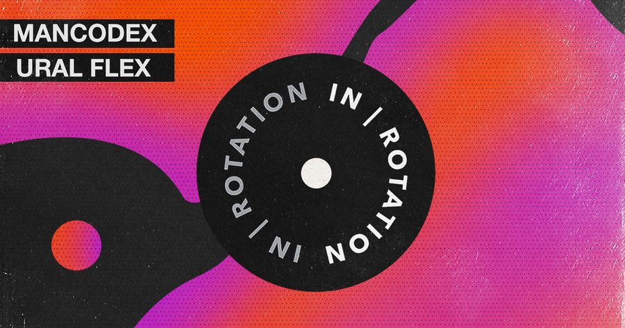

Mancodex Rumbles on Tight 2-Tracker ‘Ural Flex’ for IN / ROTATION


Mancodex is the latest producer to join the ranks of promising up-and-comers who are throwing down sounds for the quirky, bass-heavy US house scene, led by staples like Claude VonStroke and his Dirtybird label. In the case of Mancodex, though, his rumblings are coming to us all the way from Russia, demonstrating the universal appeal that a huge groove can have.
Mancodex has been earning support from some of the scene’s biggest names, while rubbing shoulders with the hottest labels in house music with releases he’s already placed with Box of Cats, Medium Rare Recordings, Audiophile XXL and a career-launching appearance on Dirtybird. He’s now taking it a step further with a tight new two-track offering for IN / ROTATION, adding our own label to the list of his already impressive catalog. Ural Flex demonstrates why he’s such a hotly tipped producer, as both cuts showcase the level of bottom-riding weight he packs into his productions. Stream the business up top, and read on to find out what Mancodex is all about.
Mancodex’s Ural Flex EP is available here.
What’s happening with Mancodex in the opening months of 2019?
I’ve finished a couple of demos—hope to release it soon. Then, I had my first release this year. Two cool tracks are coming up soon on Box of Cats. And now I’m here!
You’ve made a strong impression with your Mancodex alias in the past few years. What’s the story behind this alias, and were you producing prior to launching this project?
Mancodex stands for “Hey, man, Code X.” I heard this phrase from a random guy when I started playing my DJ sets at a party in my hometown six or seven years ago. I guess he meant Code X, like, “It’s time to have fun.” It sounds pretty good, so I took this name.
Are you still based in Russia, and how does this feed into what you do as a DJ/producer?
Yes, I still live in my home country. Russia is really big, but most festivals and events take place in Moscow and Saint Petersburg. That’s why it’s very difficult to live in the central region of Russia and be a part of the scene.
How would you describe the Mancodex sound?
The Mancodex sound is one solid piece of groove and drive. Also, I tried to combine modern and classic sounds to get the right balance and vibe—the vibe is the most important.
Do you feel a special affinity with the house sound coming out of the US right now?
Yeah, absolutely. I’ve been enchanted by the opportunity to release my music there. No matter how much money and followers you have, or where are you from, your music is the main thing. And this is absolutely amazing. My release on Dirtybird proved it.
You’ve got a brand-new two-track release coming out on IN / ROTATION. Tell us about how you connected with the label, and share the story behind the release.
I’ve been following your label since its launch, and I was surprised at how much great music you guys have. After I finished my tracks, I asked my manager, Anton Heas, to send tracks to you. I wanna say a special thanks to Anton for his help. He is the best!
What’s on the agenda for the rest of the year?
More good music. Also, a visit to USA, I hope!
Follow Mancodex on Facebook | Twitter | SoundCloud
Follow IN / ROTATION on Facebook | Twitter | SoundCloud